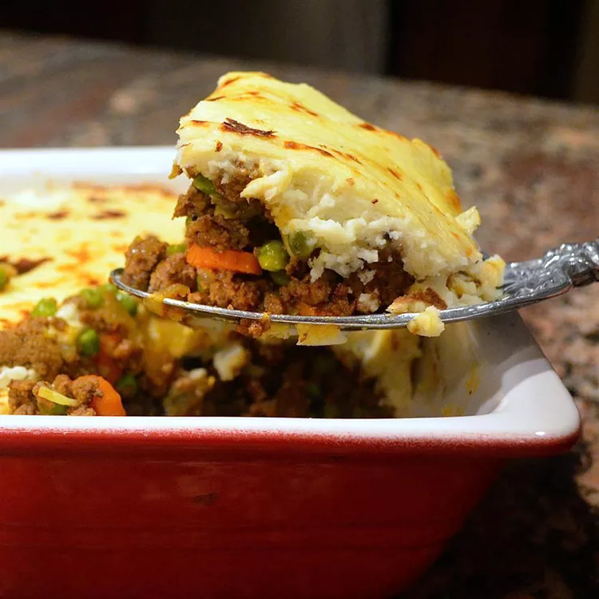

Shepherd's Pie

A hearty and warm shepherd's pie
The undebated king of comfort food is by far "shepherd's pie". Though, made with beef, some would call it a "cottage pie". No matter the name you choose to call it, this is guaranteed to be a wonderful addition to your recipe book!
Ingredients
For the beef filling:
- 1 medium onion, finely diced
- 1 medium carrot, finely diced
- 2 ribs celery, finely diced
- 3 garlic cloves, minced
- 2 lbs ground beef (or lamb)
- 1 tbsp tomato paste
- worcestershire sauce, to taste
- 1/2 cup beef or chicken broth
- 1 cup frozen peas
- 1 cup frozen corn
- salt and pepper, to taste
For the mashed potato topping:
- 6-8 medium yukon gold potatoes, cut into 1" pieces
- 3-4 garlic cloves, smashed
- 1/2 cup whole milk
- 1/2 cup butter, room temperature
- 1/2 cup sour cream
- salt and pepper, to taste
- parsley or chives, for garnishing
Steps:
Preparing the layers:
- preheat oven to 425
- place large pot of water over medium high heat, season generously with salt
- once water is boiling, add potatoes to pot, cook until tender (about 20 mins), make beef filling in the mean time
- place large, heavy bottom skiller over medium high heat
- once heated, add oil to pan and allow to shimmer
- add onion, celery, and carrot to pan, saute until soft, about 5 mins
- add minced garlic and cook until aromatic, about 1 min
- add ground beef to mixture, break up and create a single layer, cook until there is no more pink
- add tomato paste and cook until a dark burnt orange color, about 3 mins
- add broth and stir to incorporate
- season mixture with salt, pepper, and worcestershire sauce to taste, cook until mixture thickens
- add frozen peas and carrots, cook until heated through, about 2 mins
- at this point, check potatoes and drain if fork tender
- add potatoes to large mixing bowl and mash
- add butter, milk, and sour cream and mix until incorporated evenly
- season with salt and pepper to taste
Assembly and baking:
- add beef mixture to a 9x13 baking dish
- carefully layer mashed potatoes on top of beef
- place in oven and bake for 30-35 minutes, or until potatoes reach a golden brown color
- remove from oven and garnish with finely chopped parsley or chives